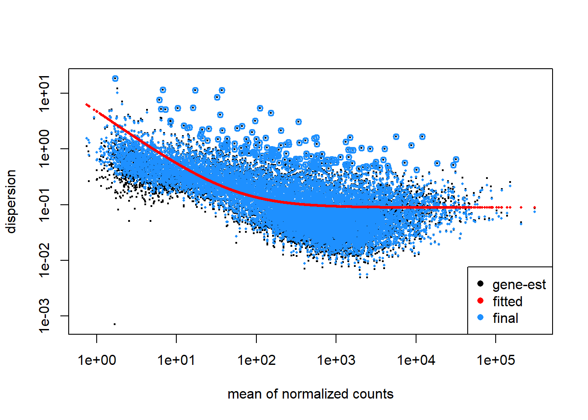
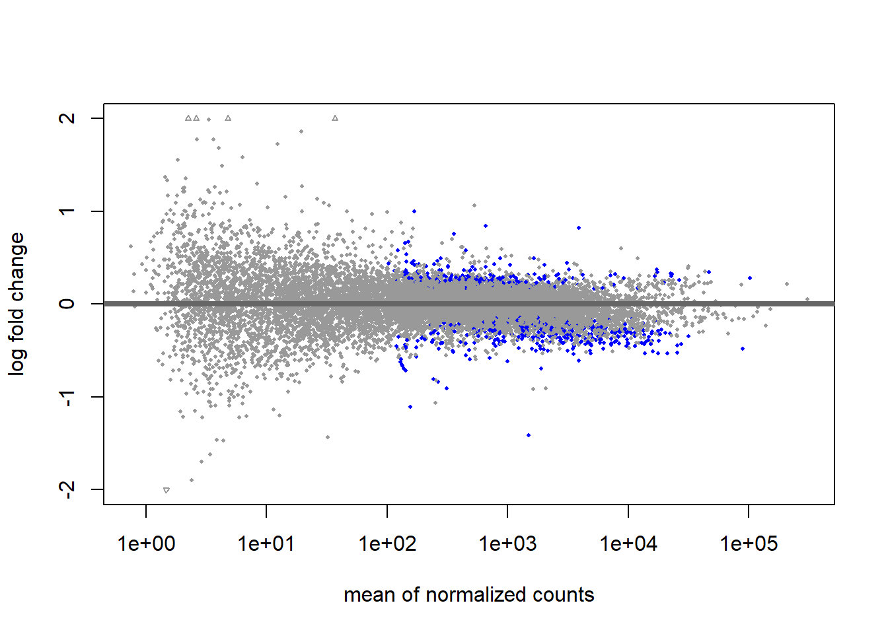

RNA-Seq Analysis Part 4: Differential Gene Expression Analysis
RNA-seq
analysis
tutorial
R
Author
Robin Schäper
Published
May 4, 2026
Introduction
In this fourth part of our analysis we will finally test which genes actually differ in their expression between samples. All the previous parts were preliminary work to load the data and check whether it even makes sense to do this next exciting step! We will learn a lot more about how differential expression analysis works statistically, what p-value adjustment is, log2FoldChange shrinkage and how to filter and visualize differentially expressed genes.
We have already prepared our data in a previous part of this series. The gist of this preliminary work is contained in the folded code chunk below.
Code
#load necessary librarieslibrary(here) # for file pathslibrary(DESeq2) # for RNA-seq analysislibrary(org.Hs.eg.db)library(AnnotationDbi) # for gene annotation# Downloading the count matrixurl <-"https://www.ncbi.nlm.nih.gov/geo/download/?acc=GSE123658&format=file&file=GSE123658%5Fread%5Fcounts%2Egene%5Flevel%2Etxt%2Egz"dest <-here("data", "rnaseq", "GSE123658_counts.tsv.gz")download.file(url, destfile = dest)# Loading the count matrixcounts <-read.delim(dest, row.names =1)# Remove "X" prefix from column namescolnames(counts) <-sub("^X", "", colnames(counts))# require genes to have a count of 10 or more in at least 5 samples to be included in the analysiskeep <-rowSums(counts >=10) >=5counts <- counts[keep, ]# Loading the metadatalibrary(GEOquery) # for loading data from GEOgse <-getGEO("GSE123658", GSEMatrix =TRUE)# Combine metadata from both platforms into a single data frameeset_nextseq <- gse[["GSE123658-GPL18573_series_matrix.txt.gz"]]eset_hiseq <- gse[["GSE123658-GPL20301_series_matrix.txt.gz"]]meta <-rbind(pData(eset_nextseq),pData(eset_hiseq))meta$sample_id <-sub(".*ID:", "", meta$title)meta$sample_id <-trimws(meta$sample_id)# set row names of metadata to sample_idrownames(meta) <- meta$sample_id# define factor condition based on the title columnmeta$condition <-ifelse(grepl("healthy", meta$title, ignore.case =TRUE),"control","disease")meta$condition <-factor(meta$condition, levels =c("control", "disease"))# define factor platform based on the platform_id columnmeta$platform <-ifelse(grepl("GPL18573", meta$platform_id),"NextSeq","HiSeq")meta$platform <-factor(meta$platform, levels =c("NextSeq", "HiSeq"))# define age as numeric variablemeta$age <-as.numeric(meta$`age:ch1`)# define sex as a factor variablemeta$sex <-factor(meta$`Sex:ch1`, levels =c("M", "F"))# Aligning the count matrix and metadatameta <- meta[match(colnames(counts), rownames(meta)), ]# Create a mapping between Ensembl gene IDs and gene symbolsgenes <-rownames(counts)gene_symbols <-mapIds( org.Hs.eg.db,keys = genes,keytype ="ENSEMBL",column ="SYMBOL",multiVals ="first"# should multiple mappings occur)# Create DESeqDataSet objectdds <-DESeqDataSetFromMatrix(countData = counts,colData = meta,design =~ platform + condition)# Add gene symbols as row datarowData(dds)$symbol <- gene_symbols[rownames(dds)]# cleanup missing gene symbols (NA) and replace them with the Ensembl ID againsymbols <-rowData(dds)$symbol# Replace NA with Ensembl IDssymbols[is.na(symbols)] <-rownames(dds)# ensure uniquenesssymbols <-make.unique(symbols)rowData(dds)$symbol <- symbolsdds <-estimateSizeFactors(dds)# Perform variance stabilizing transformation to reduce mean-variance dependencevsd <-vst(dds, blind =TRUE)mat <-assay(vsd)
Tools of the trade: DESeq2, edgeR and limma voom
The quality controlled count matrix is our playground. Why not just perform a t-test or ANOVA with these counts? We have to face the fact that count data is not normal-distributed and does not exhibit constant variance across expression levels. To obtain more reliable results, we can make use of various software packages developed precisely for this challenge.
DESeq2 manages to be the most user-friendly among the three, however edgeR can perform especially well with a small sample size and limma voom is the fastest. Should computational resources be limited, sample size be large or complex designs be necessary (we will get to that), then limma voom can be a better choice over DESeq2. However, I have analysed a dataset with 500+ samples on a reasonably good virtual machine in the past and could get away with using DESeq. We will use it for the following analysis.
Design matrices
So you have conducted your sequencing experiment and would now like to formulate your scientific question as something the computer can understand. One way you can do this is by making use of the so-called experimental design or design matrix. For example, you want to check if your condition of interest leads to statistically significant differences in gene expression compared to the control. The design matrix for this would simply be ~ condition.
But designs can get more complex. For example, you might want to check if the effects of your condition are dependent on the sex of the individuals. In this case, you would need to include an interaction term in your design matrix, which would look like this: ~ condition * sex or ~ condition + sex + condition:sex(the two are equivalent).
When creating the DESeqDataSet object (dds), we have already specified a design matrix. One can look it up this way:
library(DESeq2)design(dds)
~platform + condition
We will model platform because in the previous episodes we saw that it encodes a strong batch effect. If we would deal with a time-series experiment, we would formulate a design like ~ subject + timepoint - this would account for transcriptomic differences inherent to the subject (individual) and probe how they evolve over time. Notice also that a design like ~ subject + sex + timepoint will not work, because subject and sex are completely confounded and the model can not be fit.
Make sure to include every known major source of variation in your design matrix, else you will run into a lot of false positives. Should you observe a batch effect (a large source of technical variation) not documented in the metadata, you could try to model it with packages like RUVseq or sva (modelling so-called “hidden batch effects”). However, if your suspected batch effect is confounded with your biological condition of interest, you are reaching your limits. For a truly unrecorded batch effect, you can only try to gather evidence (i.e. search latent structure or attempt to define “control genes” not relevant to your biological condition).
Running DESeq2
Now let’s run our differential expression model with the specified design matrix
dds <-DESeq(dds)
Note🧠 What does DESeq() do?
Estimate size factors
We have already discussed how size factors for correction of library size are estimated in part 2 of this series. DESeq2 makes use of the so-called median of ratios method for size factor estimation.
Estimate gene-wise dispersion
Dispersion is a kind of variance. The counts of a gene will inevitably vary due to technical factors, that should be clear by now. But gene counts fluctuate across samples of a group beyond random noise (because of biology!). Before we want to make any statement about differences between samples, we should first know how much variance we find for each gene within a condition (for example: Is this a moderately expressed gene with around 1000 counts and little variation in healthy control samples? Or is this a highly expressed gene in diabetes subjects with a variance spanning orders of magnitude?). The estimation itself happens via maximum likelihood estimation. Here is a classic intuition for this process: Imagine you flip a coin and want to know the likelihood of getting heads (imagine you would not know it truly is 50 %!). So you generate data, flip the coin 10 times and get 7 heads and 3 tails. Given the data, you estimate the likelihood for heads to be 70 %, which is not totally off. And if you had the chance to generate more data, your estimate would become better and better.
Mean-dispersion relationship (a.k.a. fit curve to gene-wise dispersion estimates)
DESeq2 will introduce one more assumption about our data at this point: That genes with similar mean expression have similar dispersion. DESeq2 will model this global trend as a smooth curve to determine the expected dispersion for a gene with a given mean. We will make use of this curve in the next step.
Final dispersion estimates (a.k.a. shrink gene-wise dispersion estimates)
We have estimated the dispersion for each gene with the maximum likelihood method and fit a smooth curve for the relationship between the mean of normalized counts and dispersion. Some of these maximum likelihood estimations will be unreliable, especially if the sample size is small and the gene has a low count. Therefore DESeq2 employs an empirical Bayes approach to pull noisy per-gene estimates towards the global trend of the curve we have fit in step 3. Thereby we make use of both sources of information for our ultimate estimate what the dispersion of a gene could be. Again, it is so important to estimate this dispersion, because we will use it as a given parameter in our model. By the way, this is also why the original DESeq2 authors called their paper “Moderated estimation of fold change and dispersion for RNA-seq data with DESeq2” - what is being moderated is the dispersion estimate for each gene (Love, Huber, and Anders 2014).
Let’s see how DESeq2 has estimated the dispersion.
plotDispEsts(dds)

Looks good, the data scatters around the curve and dispersion increases when the mean expression level increases. Because our sample size is large, we expect little shrinkage to occur.
Extracting statistical results with DESeq2
We have fitted a general linear model to our data and performed statistical tests to gauge the effect of our condition. We can learn about the available l2fc results by calling
Now we apply the contrast disease vs. control. The first string inside the function is the variable we want to test, the second one the condition of interest and the third one is the reference.
res <-results( dds,contrast =c("condition", "disease", "control"))head(res)
log2 fold change (MLE): condition disease vs control
Wald test p-value: condition disease vs control
DataFrame with 6 rows and 6 columns
baseMean log2FoldChange lfcSE stat pvalue
<numeric> <numeric> <numeric> <numeric> <numeric>
ENSG00000237683 2295.3297 -0.5006336 0.222295 -2.252113 0.0243151
ENSG00000188976 939.3802 -0.0607583 0.116123 -0.523225 0.6008179
ENSG00000187961 225.2009 -0.0675828 0.206645 -0.327048 0.7436320
ENSG00000187583 14.8453 0.2935559 0.265743 1.104660 0.2693068
ENSG00000188290 25.1210 -0.3065640 0.275944 -1.110965 0.2665833
ENSG00000187608 557.9029 0.1729665 0.315953 0.547443 0.5840741
padj
<numeric>
ENSG00000237683 0.178449
ENSG00000188976 0.793969
ENSG00000187961 0.879591
ENSG00000187583 NA
ENSG00000188290 NA
ENSG00000187608 0.782913
Note🧠 Which statistics does the results function report?
baseMean
Average expression of a gene across all samples
log2FoldChange
log2FoldChange in gene expression between condition of interest and reference
l2fcSE
Standard error of the log2FoldChange. This is calculated after the model fit and reflects dispersion (biological variability), sample size and design structure (i.e. how well effects can be separated).
stat
The Wald statistic, basis of p-value calculation
pvalue
Likelihood of observing a z-statistic as extreme as the one obtained by pure chance. Low p-values motivate us to reject the null-hypothesis in favor of the alternative
padj
p-value after adjustment for multiple testing
Note🧠 Which kind of statistical test does DESeq use?
If we are probing a difference between just two conditions, like healthy vs. diabetes, DESeq2 employs the Wald test, if we are asking if there is any difference between three or more conditions, like healthy vs. diabetes type I vs. diabetes type II, we use the likelihood ratio test.
The Wald test calculates the so-called z-statistic, which is \[ W = \frac{\hat{\beta}_k}{SE(\hat{\beta}_k)} \]
where \(\hat{\beta}_k\) is the estimated coefficient for the condition of interest (from the general linear model fit) and \(SE(\hat{\beta}_k)\) is the standard error of this coefficient (from the inverse Fisher information). The z-statistic is then used to calculate the p-value, which tells us how likely it is to observe such a statistic under the null-hypothesis (i.e. no difference between conditions).
The likelihood ratio test makes use of the same fitted model but extracts uncertainty in a different way. While the Wald test asked: “Is the coefficient far from zero relative to its standard error?”, the likelihood ratio test asks: “Does including this term improve the model fit?”. Under the hood we fit both a full and a model reduced by our variable of interest.
\[ D = 2(\mathcal{l}_{full} - \mathcal{l}_{reduced}) \]
where \(\mathcal{l}\) is the log-likelihood.
Note🧠 What is multiple testing correction?
When performing many hypothesis tests we run into the problem of false discoveries. If we for example check 10000 genes for differential expression and accept a p-value cutoff of 0.05 (i.e. 5 %), we will have on average 500 false hits.
To reduce this so called experiment-wide type I error, we adjust our p-values based on the number of tests we performed. One way we could do this is by just multiplying our p-values with the number of statistical tests \(m\). This is also called the Bonferroni correction and suffers from being very conservative, actually, too conservative because it will increase our type II error, which is missing out on true effects!
The method DESeq2 uses for p-value adjustment is the so-called Benjamini-Hochberg procedure. First, p-values are ranked from smallest to largest.
\[ p_{1} \leq p_{2} \leq \dots \leq p_{m}\]
The raw adjusted p-values are
\[ prawadj_{i} = \frac{m}{i}p_{i} \]
but furthermore we want to ensure monotonoicity (adjusted p-values must be non-decreasing as rank increases). The raw formula can produce
we clip these p-values at \(padj_{i} \leq 1\) and compute them backwards (\(padj_m = p_m\)).
Note🧠 What is independent filtering?
We have learned from the info box above that p-value adjustment is necessary to control false positives. What if there was a clever way to exclude genes before even testing? We could increase our statistical detection power. One definite requirement for such a criterion is that it is statistically independent from the test statistic under the null hypothesis (Love, Huber, and Anders 2014). DESeq2 uses the average expression strength to exclude genes that likely won’t reach significance before even testing.
Because genes with very low counts usually experience high dispersion, they often don’t reach significant differential expression. DESeq will calculate a p-value for these, but the padj will be NA. Independent filtering is turned on by default.
Note🧠 Why are some p-values or padj NA?
There are three possible reasons
padj is NA because of independent filtering (discussed in the box above)
p-value is NA because all counts are zero (we filtered those before)
p-value is NA because DESeq flags the gene as an extreme outlier based on Cook’s distance
and if the p-value is NA, the padj will also be NA.
Effect-size-aware hypothesis testing
DESeq2 has assigned each gene a log2FoldChange and an adjusted p-value, great! Now we are usually interested in the most significant and strongest effects in our data and apply a, somewhat arbitrary but conventional, filter to our results. We will only procede with log2FoldChanges that have an adjusted p-value of less than 0.05 and look for log2FoldChange greater than 0.2. Keep in mind that we are not forced to think this way about our data, we may argue that a small log2FoldChange in a gene can have an important biological effect. Imagine for example a tightly regulated system of transcription factors, even a small increase could be relevant.
Another important point: You may have seen people (I am guilty of this myself!) filter results based on the log2FoldChange after applying the results function. Technically, this is not correct and invalidates our p-values. The null-hypothesis we have just tested was \[
H_0: \left| \text{l2fc}(\text{gene\_expression}) \right| = 0
\]
and the alternative has been \[
H_1: \left| \text{l2fc}(\text{gene\_expression}) \right| > 0
\]
This forms the basis for our p-value calculation. But now we condition our results based on observed data and we will preferentially keep genes with noisy high l2fc and thus more false positives.
Instead we will incorporate the effect size into our statistical testing!
Log2FoldChange shrinkage for realistic effect sizes
This section will discuss log2FoldChange shrinkage of our results, not to be confused with shrinkage of gene-wise dispersion estimates, which is something DESeq2 does internally when we run it (discussed in an info box above).
A great way to visualize our results is the MA-plot (blue genes have a padj < 0.1)
plotMA(res, ylim=c(-2, 2))

Notice all these huge log2FoldChanges for genes with low counts? Amazing biological effects? Probably not. Low-count genes are prone to error in log2FoldChange space. If their count increases from 10 to 40, we will compute a log2FoldChange of 2 (i.e. four times the gene expression between samples), although it could be a change within the range of technical noise.
To correct this, we will shrink low-count genes with inflated, unconfident log2FoldChanges to zero. Notice that this will not erase true differences, but it will prevent low-count genes from dominating our top list of differentially expressed genes. Whenever we want to report a realistic effect size, we can use “shrunken” results. To compute results with shrinkage, we need to install the library apeglm, which is available from Bioconductor.
Great, this will help us if we ever want to focus more on the effect size in our upcoming visualization phase. For now, we will stick to the results without shrinkage for our volcano plot.
Visualizing results with a volcano plot
The volcano plot gives us a good first visualization of our effect size (l2fc) and statistical evidence (p-values).
We have set up a mapping between the Ensemble gene IDs and gene symbols previously, which will come in handy now
symbols <-rowData(dds)$symbolnames(symbols) <-rownames(dds)# because results inherit the row order from the dds, we can just set the symbolsres_thresh$symbol <- symbols[rownames(res_thresh)]
To create the volcano plot, we will make use of the package EnhancedVolcanofrom Bioconductor.
A meager single gene has passed our adjusted p-value threshold. This indicates that statistical evidence for any of the effects we observe is low. Remember the PCA plot we discussed in part 2 of this series? We see a continuation of the problem here. Type I diabetes samples appear to constitute a heterogeneous class of gene expression profiles. Statements of the form “gene X is significantly higher expressed in type I diabetes subjects compared to healthy controls” is not possible here. The heterogeneity is the trend! And this opens the exciting opportunity to study subgroups in our type I diabetes samples to refine our scientific question. But for tutorial purposes we will proceed with the standard analysis for now.
There is another lingering problem: While people with expert domain knowledge might look at a set of differentially expressed genes and quickly get which underlying biological process is affected (not that I have ever met such a person), it can be helpful to move the analysis to the level of biological pathways. We will do so in the next part using a technique called gene set enrichment analysis.
Conclusion
We have learned a lot about DESeq, how to make use of its very user friendly functions and statistical caveats like multiple hypothesis testing. We have generated our first list of significantly differentially expressed genes and are ready to make even cooler visualizations next!
Love, Michael I., Wolfgang Huber, and Simon Anders. 2014. “Moderated Estimation of Fold Change and Dispersion for RNA-Seq Data with DESeq2.”Genome Biology 15 (12): 550. https://doi.org/10.1186/s13059-014-0550-8.